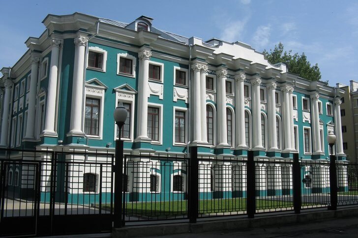

Музейная экспозиция расположилась в барочном дворце XVIII века, выстроенном по проекту Н. Н. Иевского по заказу воронежского губернатора. Здесь собрана внушительная коллекция, состоящая из артефактов древнего мира, русской и европейской живописи, скульптуры, икон и предметов прикладного искусства. Музей был основан в 1933 году, сегодня он является крупнейшим культурным центром города и всего региона.
